-
The Search Option on the home page allows users to query the database with specific keywords for Disease, Assay type, Country, Isolation source, Instrument and Year.
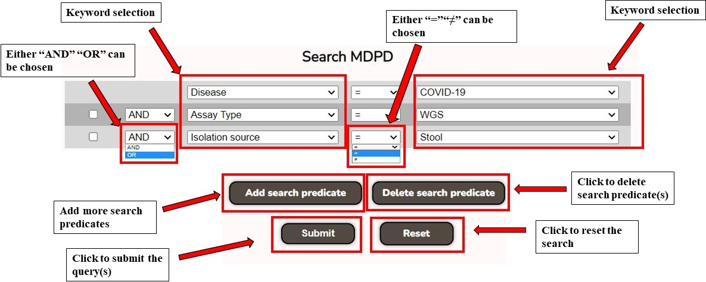 -
The search result page provides information about the Run ID, BioProject ID, SRA Study ID, Disease, Disease Sub-group, Isolation Source, Instrument, Assay Type, Country, and Year. The table displayed in the search result can be downloaded in CSV format by clicking on the "Download table" button located at the top of the page.
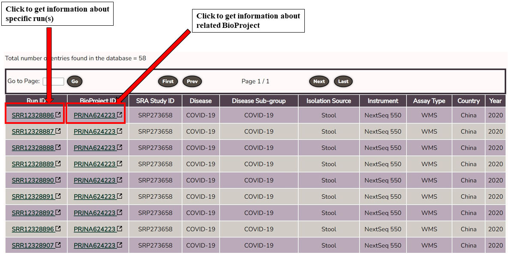 -
The Run page gives the information of the Experiment ID, BioSample ID, Average Spot Length, Number of Bases, Center Name, Biome, and Therapeutics. The link beneath the title leads to NCBI SRA page and BioProject ID links to BioProject page in MDPD.
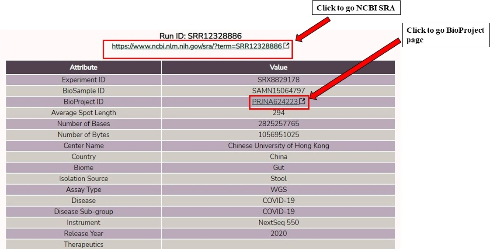 -
The BioProject page shows the information related to the study and the total number of runs of the BioProject. If subgroups are present for the study, then a plot of differential taxa can be visualized as LDA plot. Taxonomic profiles can be visualized with Krona plots for group or subgroup. The Run ID(s) link to the Run page and the link just beneath the title leads to the NCBI BioProject page.
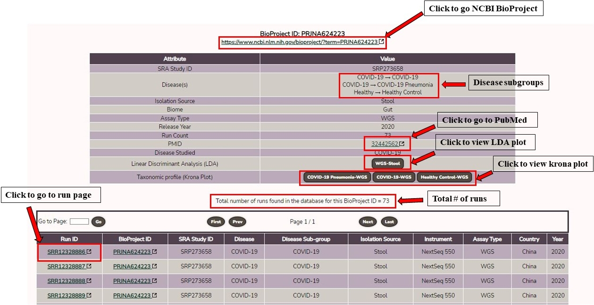 -
The LDA (Linear Discriminant Analysis) plot provides information about the differential biomarkers (genus for amplicon; and species for WMS). The horizontal bars represent the genus/species and the length of the bar denotes the LDA score (log10). LDA score signifies the effect size of each differentially abundant microbe. A cut-off of log10 LDA ≥ 2 was chosen for making the plot. The Kruskal-Wallis cutoff p-value < 0.01 was chosen. The LDA plot can be downloaded as a SVG image by clicking on the "Export as SVG" button in the menubar located at the top right corner of the plot.
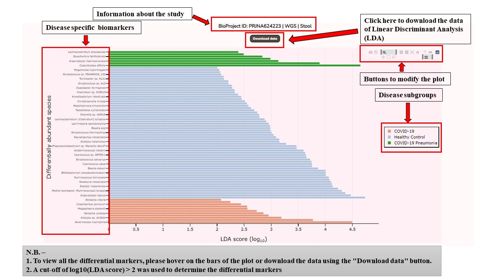 -
The taxonomic composition of microbiome data of different isolation sources of lung conditions can be visualized by Krona plots. Two types of Krona plots are present in the database, (i) for merged sequence runs and (ii) for each sequence runs. The hierarchical taxonomic classification can be visualized with this plot with genus/species at the outer ring and the inner ring denoting the domains. The color gradient shows the abundant taxa (red) and green denotes the least abundant taxa.
For a better view, see the plot at "max depth = 6" for amplicon (genus) and "max depth = 7" for WGS (species). The Krona plot can be downloaded as a SVG image using the "Snapshot" button located at the upper left corner of the plot.(a) (b) 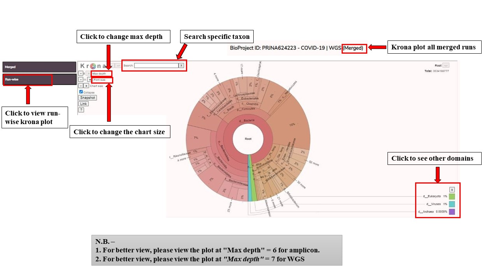 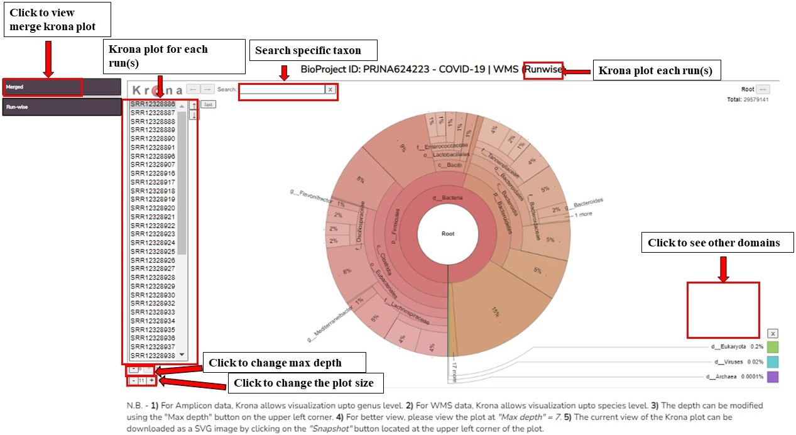
-
-
The browse page of MDPD has five sections.
-
The first section provides information about the Disease-wise BioProjects.
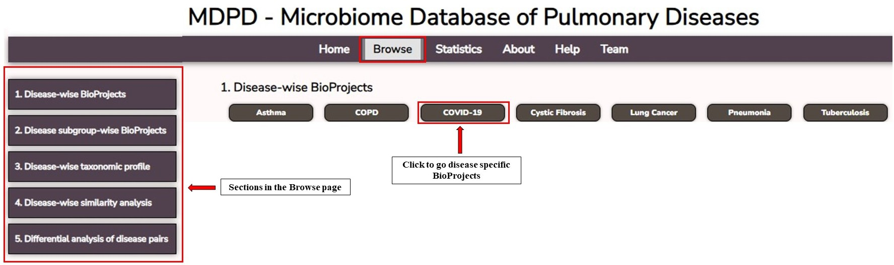 Click any one of the diseases to view the list of BioProjects associated with the study. Click one BioProject to go to the BioProject page.
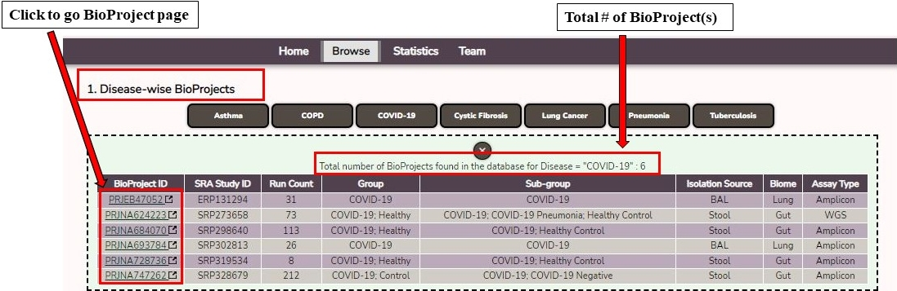 Click the checkbox to show only BioProjects with Healthy/Control.
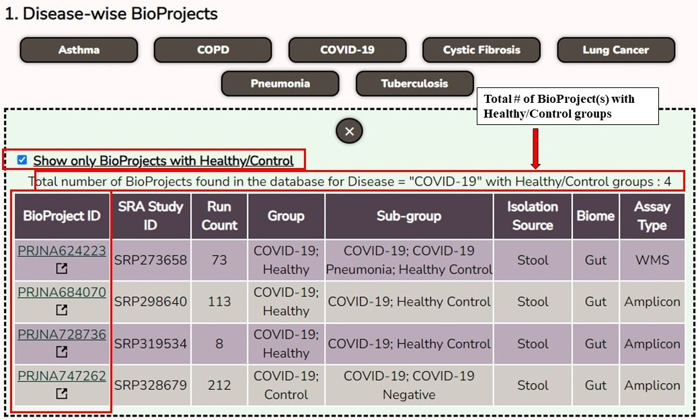 -
The second section provides information about the Disease subgroup-wise BioProjects.
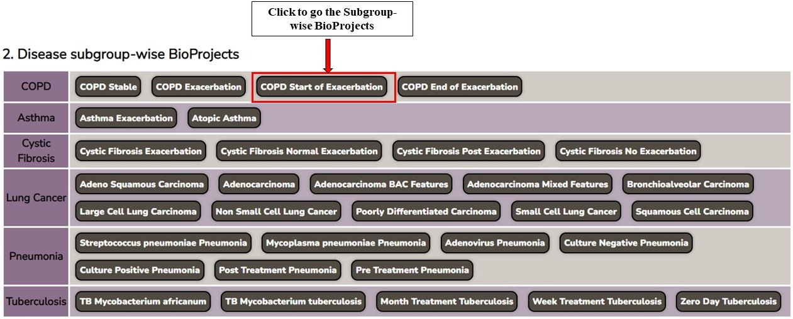 Click any one of the disease subgroups to view the list of BioProjects associated with the study. Click one BioProject to go to the BioProject page.

-
The third section provides the facility of visualizing the taxonomic profile of the microbiome across different isolation sources of the lung conditions using a Krona plot.

-
The fourth section enables the users to obtain the list of shared prevalent taxa between lung and gut microbiomes of different lung conditions. The isolation sources with the highest number of runs for lung and gut were taken for this analysis. Click "Get result" to view the shared microbes plot.
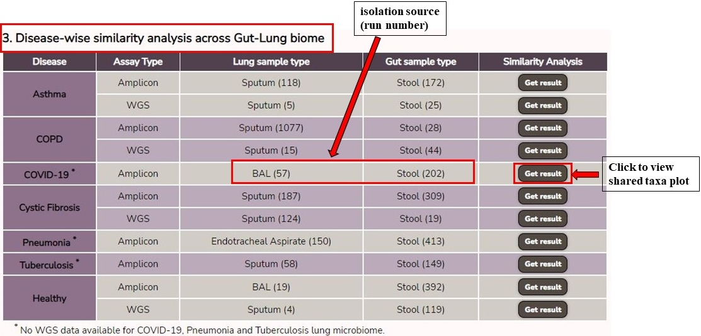 The UpSet plot shows the number of organisms that are found in the lungs, gut, and microbiomes. The Likert plot (diverging bar plot) depicts the prevalence of the organisms that are found in both lung and gut microbiomes. A prevalence cut-off of 50% at a detection level ≥ 0.0001 was taken to get the prevalent taxa. The UpSet plot can be downloaded as a SVG image by clicking on the "Download UpSet plot" button located at the top of the page. The Likert plot can be downloaded as a SVG image by clicking on the "Download Likert plot" button located at the top of the page.
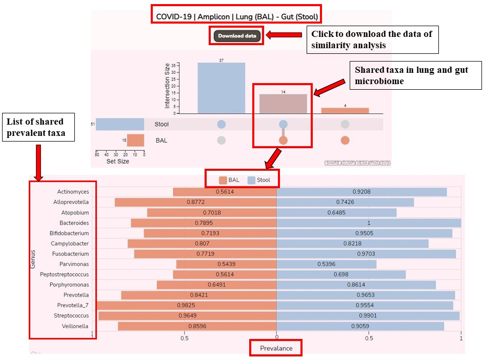 -
The fifth section provides the facility to obtain the set of differentially abundant taxa between a pair of lung conditions . The analyses were done on the isolation sources where the data is available for both conditions. Click any button "Show" to view the associated pair.
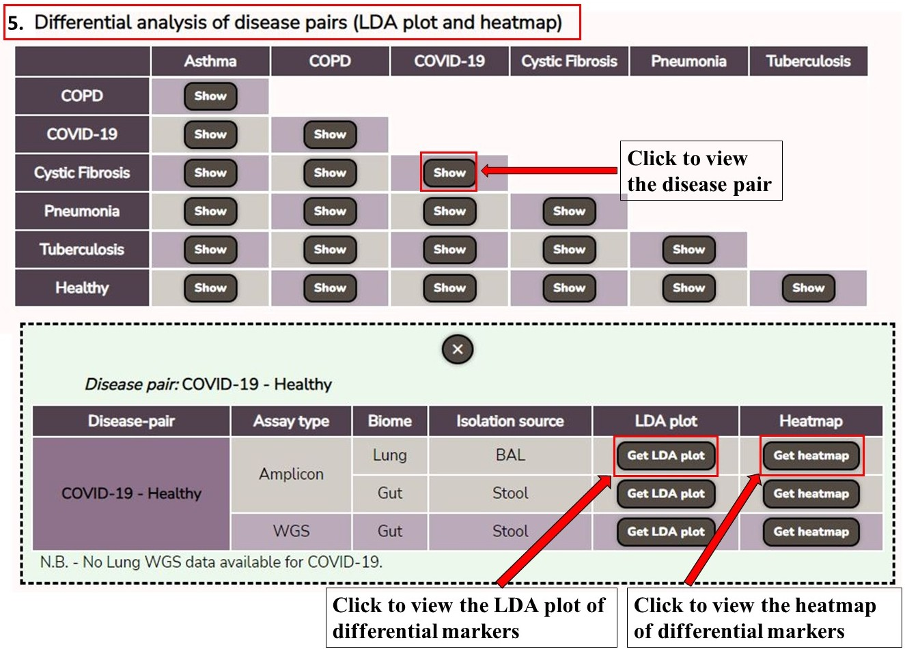 Users can obtain the LDA plot (horizontal bar plot) by clicking the "Get LDA plot" to see the differentially abundant taxa for the pair of lung conditions/groups (cut-off log10 LDA ≥ 2). With the "Get heatmap" option users can get the most abundant taxa (cut-off log10 LDA ≥ 3) for the disease pair and the BioProjects as the source of marker taxa.

There are few buttons to modify the plot.
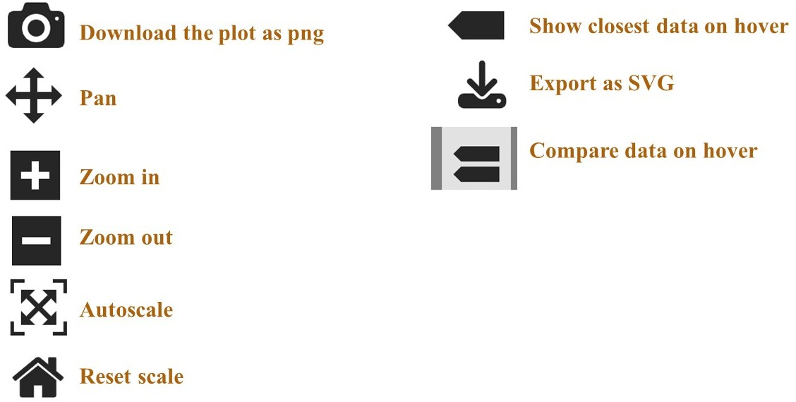
-
© 2023 Bose Institute. All rights reserved. For queries, please contact Dr. Sudipto Saha (ssaha4@jcbose.ac.in, ssaha4@gmail.com).